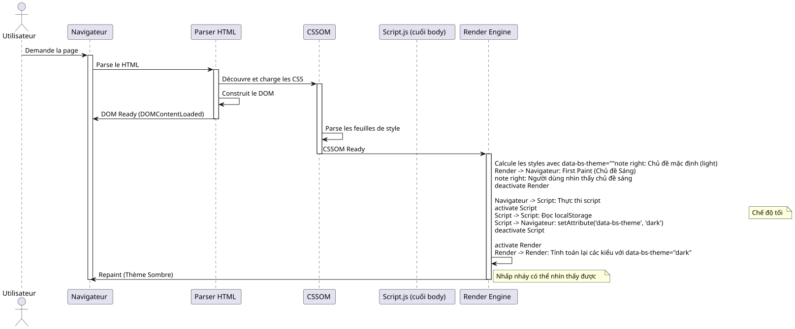

Nghệ thuật Pre-loading: Loại bỏ hiện tượng "Flash" Giao diện với JavaScript và CSS
Đăng ngày 15 November 2025
Tóm tắt
Trong bài viết kỹ thuật chuyên sâu này, chúng tôi khám phá cách triển khai bộ chọn chủ đề (sáng/tối) mà không bị hiệu ứng nhấp nháy khó chịu xảy ra khi tải trang. Chúng tôi phân tích chi tiết chu kỳ kết xuất của trình duyệt, nguyên nhân gốc rễ của FOUC (Flash of Unstyled Content), và đề xuất một giải pháp mạnh mẽ dựa trên việc tải trước đồng bộ trong`<head>`Kỹ thuật này đảm bảo trải nghiệm người dùng mượt mà và chuyên nghiệp.
Vấn đề: Sự nhấp nháy chủ đề quái ác này
Một Cơn Ác Mộng đối với Trải Nghiệm Người Dùng
Hãy tưởng tượng tình huống này: bạn đã dành hàng giờ để thiết kế một giao diện tối (dark theme) tuyệt đẹp cho ứng dụng web của mình. Màu sắc được cân bằng hoàn hảo, độ tương phản tối ưu và người dùng rất yêu thích tùy chọn này. Nhưng có một vấn đề gây khó chịu: mỗi khi tải lại trang, trong một phần nhỏ của giây, giao diện sáng mặc định sẽ hiển thị trước khi giao diện tối được áp dụng.
Hiện tượng "flash" hình ảnh này, dù ngắn (đôi khi dưới 100ms), vẫn có thể được mắt người nhận thấy ngay lập tức và tạo ra một trải nghiệm khó chịu. Đối với những người dùng chọn giao diện tối vì lý do thoải mái cho mắt hoặc khả năng tiếp cận, sự nhấp nháy này thậm chí có thể gây đau mắt, đặc biệt là trong môi trường thiếu sáng.
FOUC: Một Vấn Đề Web Cũ
Hiện tượng này là một biến thể của cái được gọi là "Flash of Unstyled Content" (FOUC), một vấn đề điển hình trong phát triển web có từ những ngày đầu của CSS. FOUC xảy ra khi trình duyệt hiển thị tạm thời nội dung HTML mà không áp dụng các kiểu CSS, tạo ra một khoảng chớp nội dung không được định dạng.
Trong trường hợp cụ thể của chúng tôi, chúng tôi không nói về một nội dung hoàn toàn không được định dạng, mà đúng hơn là mộtNhấp nháy sai Chủ đề(FOWT) - nội dung được định dạng kiểu dáng, nhưng sai chủ đề. Điều này đặc biệt gây khó chịu vì nó cho thấy ứng dụng của chúng ta "quên" tùy chọn của người dùng mỗi khi tải lại trang.
Tác động đến Nhận thức về Chất lượng
Vấn đề này, mặc dù mang tính kỹ thuật, nhưng có những tác động đáng kể đến nhận thức về chất lượng ứng dụng của bạn:
Thiếu độ trau chuốt: Việc nhấp nháy tạo cảm giác ứng dụng chưa hoàn thiện hoặc chưa được tối ưu hóa. Người dùng thường liên tưởng những lỗi hình ảnh nhỏ này với sự thiếu chuyên nghiệp nói chung.
Mất tính nhất quán: Ứng dụng dường như "quên" các tùy chọn của người dùng, tạo ra cảm giác mất đồng bộ giữa giao diện và mong đợi.
Mỏi mắt: Đối với những người dùng nhạy cảm với ánh sáng hoặc bị đau nửa đầu, hiện tượng nháy sáng này có thể không chỉ đơn thuần là một sự bất tiện về mặt thẩm mỹ.
Hiệu suất cảm nhận được: Trớ trêu thay, ngay cả khi trang web của bạn tải nhanh, hiện tượng nhấp nháy này có thể tạo cảm giác ứng dụng bị chậm hoặc kém phản hồi.
Phân tích Kỹ thuật của Vấn đề
Để hiểu cách giải quyết vấn đề này, trước hết cần hiểu tại sao nó xảy ra. Hiện tượng nhấp nháy xảy ra do có sự chênh lệch về thời gian giữa ba sự kiện quan trọng trong vòng đời của một trang web:
-
Việc phân tích cú pháp HTML ban đầu: Trình duyệt đọc và phân tích cấu trúc trang của bạn
-
Việc áp dụng các style CSS: Trình duyệt áp dụng các quy tắc CSS và tính toán kết quả hiển thị trực quan
-
Việc thực thi JavaScript: Mã thay đổi chủ đề của bạn đang chạy
Vấn đề xảy ra khi sự kiện số 3 (thực thi JavaScript) diễn ra sau khi trình duyệt đã bắt đầu hoặc hoàn tất sự kiện số 2 (áp dụng các kiểu style). Tại thời điểm đó, trình duyệt đã đưa ra quyết định về việc hiển thị chủ đề nào, và mã của bạn đến quá muộn để gây ảnh hưởng trước lần kết xuất (render) đầu tiên.
Tại sao một Script Thông thường là không đủ?
Cách tiếp cận Trực quan nhưng Không hiệu quả
Cách tiếp cận tự nhiên nhất đối với một nhà phát triển sẽ là đặt một script vào cuối của`<body>`ki kiểm tra chủ đề ưa thích của người dùng và áp dụng nó. Cách tiếp cận này tuân theo các thực hành web truyền thống tốt nhất, khuyến nghị tải các script ở cuối trang để không làm chặn quá trình render.
// À la fin de <body> - L'APPROCHE INSUFFISANTE
document.addEventListener('DOMContentLoaded', () => {
const theme = localStorage.getItem('preferred-theme');
if (theme === 'dark') {
document.documentElement.setAttribute('data-bs-theme', 'dark');
}
});Cách tiếp cận này có vẻ hợp lý thoạt nhìn. Chúng ta đợi DOM sẵn sàng, sau đó áp dụng chủ đề. Đơn giản, đúng không? Đáng tiếc là sự đơn giản này lại che giấu một khuyết điểm cơ bản liên quan đến thời điểm của chu kỳ render của trình duyệt.
Hiểu về Sự kiện DOMContentLoaded
Sự kiện`DOMContentLoaded`được kích hoạt khi tài liệu HTML ban đầu đã được trình duyệt tải và phân tích hoàn toàn,không chần chừviệc kết thúc tải các bảng kiểu (style sheets), hình ảnh và các khung con (sub-frames). Đây là một điểm quan trọng cần nắm vững.
Đây là trình tự điển hình của các sự kiện:
-
Trình duyệt bắt đầu tải xuống HTML
-
Nó phân tích HTML ngay khi nhận được
-
Anh ấy khám phá các thẻ`<link>`cho CSS và bắt đầu tải chúng xuống
-
Anh ấy khám phá các thẻ`<script>`và thực thi chúng (tùy theo loại và thuộc tính của chúng)
-
Nó xây dựng DOM (Document Object Model)
-
Sự kiện
DOMContentLoadedđược kích hoạt -
Nó tiếp tục áp dụng các style và thực hiện layout
-
Lần paint (hiển thị) đầu tiên xảy ra
-
Sự kiện`load`được kích hoạt khi tất cả tài nguyên đã được tải xong
Vấn đề là gì? Giữa bước 6 (DOMContentLoaded) và bước 8 (first paint), trình duyệt đã đưa ra các quyết định về cách hiển thị trang. Nếu script thay đổi giao diện của bạn chạy ở bước 6, thì đã quá muộn để tránh việc hiển thị lần đầu với các kiểu dáng mặc định.
Vấn đề Render Blocking
Trên thực tế, thời điểm (timing) còn phức tạp hơn nhiều. Các trình duyệt hiện đại sử dụng các kỹ thuật tối ưu hóa tinh vi để cải thiện hiệu suất cảm nhận. Chúng cố gắng thực hiện lần vẽ đầu tiên (First Contentful Paint) nhanh nhất có thể để người dùng thấy được nội dung gì đó trên màn hình.
CSS mặc định là "render-blocking", điều này có nghĩa là trình duyệt sẽ đợi tải xuống và phân tích các bảng kiểu trước khi thực hiện lần paint đầu tiên. Điều này là hợp lý: chúng ta không muốn hiển thị nội dung chưa được định kiểu.
Nhưng đây mới là cạm bẫy: khi trình duyệt áp dụng các kiểu CSS này lần đầu tiên, nó thực hiện dựa trên trạng thái hiện tại của DOM. Nếu thuộc tính`data-bs-theme`vẫn chưa được xác định trên thẻ`<html>`, trình duyệt sẽ áp dụng các kiểu mặc định (thông thường là chủ đề sáng).
Sau đó, khi tập lệnh của bạn chạy và thay đổi thuộc tính này, trình duyệt phải:
-
Tính toán lại tất cả các kiểu bị ảnh hưởng bởi thay đổi này
-
Thiết lập lại bố cục nếu cần thiết
-
Sơn lại các thành phần bị ảnh hưởng
Quá trình tính toán lại và vẽ lại này là nguyên nhân gây ra hiện tượng nhấp nháy có thể nhìn thấy được.
Hình ảnh hóa Vấn đề
Để hiểu rõ hơn về chuỗi vấn đề này, hãy cùng xem xét một biểu đồ trình tự chi tiết:

Sơ đồ này minh họa rõ ràng vấn đề: lần paint đầu tiên xảy ra trước khi script của chúng ta có cơ hội thiết lập đúng chủ đề. Lần repaint tiếp theo tạo ra hiện tượng nhấp nháy có thể nhìn thấy được.
Các Nỗ lực Giải quyết Không hiệu quả
Nhiều phương pháp đã được thử nghiệm để giải quyết vấn đề này, nhưng hầu hết đều có những nhược điểm riêng:
Cách tiếp cận 1: Ẩn nội dung cho đến khi tải xong
body {
opacity: 0;
transition: opacity 0.3s;
}
body.loaded {
opacity: 1;
}Cách tiếp cận này ẩn toàn bộ nội dung cho đến khi JavaScript xác định được chủ đề chính xác. Vấn đề là gì? Điều này làm chậm quá trình hiển thị nội dung một cách nhân tạo, tạo cảm giác trang web chậm hơn. Hơn nữa, nếu JavaScript bị tắt, người dùng sẽ không thấy bất cứ điều gì!
Cách tiếp cận 2: Sử dụng loader/spinner
Tương tự như cách tiếp cận 1, nhưng có thêm một spinner tải trang. Điều này che giấu vấn đề nhưng không cải thiện hiệu suất thực tế và tạo thêm độ trễ cảm nhận không cần thiết.
Cách tiếp cận 3: Mặc định theo chủ đề tối
Một số nhà phát triển thiết lập chủ đề tối làm mặc định trong CSS. Điều này giúp tránh hiện tượng nhấp nháy đối với người dùng chủ đề tối, nhưng lại gây ra vấn đề ngược lại cho người dùng chủ đề sáng!
Không có cách tiếp cận nào trong số này là thỏa đáng vì chúng chỉ giải quyết triệu chứng thay vì nguyên nhân gốc rễ của vấn đề.
Giải Pháp Thực Sự: Hành Động Sớm Hơn
Chìa khóa để giải quyết vấn đề này là nhận ra rằng chúng ta cần định nghĩa thuộc tính`data-bs-theme` trướctrước khi trình duyệt bắt đầu áp dụng các kiểu CSS. Điều này có nghĩa là script của chúng ta phải thực thi sớm hơn trong vòng đời của trang, và đó chính xác là những gì chúng ta sẽ khám phá trong phần tiếp theo.
Giải pháp: Tải trước (Early Loading)
Nguyên lý Cơ bản
Giải pháp thanh lịch cho vấn đề nhấp nháy của chúng ta dựa trên một nguyên lý đơn giản nhưng mạnh mẽ:đồng bộ hóa trạng thái của ứng dụng với quá trình render của trình duyệt. Thay vì chờ trang tải xong mới thiết lập chủ đề, chúng ta cần thiết lập nótrong khiquá trình tải, ngay cả trước khi các kiểu CSS được áp dụng.
Cách tiếp cận này được gọi là "Early Loading" hoặc "Synchronous Preloading" trong thuật ngữ phát triển web. Ý tưởng là thực thi logic phát hiện chủ đề của chúng ta càng sớm càng tốt trong vòng đời của trang, lý tưởng nhất là trong thẻ`<head>`, ngay cả trước khi trình duyệt bắt đầu tải các tệp CSS.
Tại sao <head> là Nơi Lý Tưởng
Le `<head>`của một tài liệu HTML được trình duyệt xử lý tuần tự, từ trên xuống dưới. Mỗi phần tử được xử lý theo thứ tự xuất hiện. Đặc điểm này đóng vai trò quyết định cho giải pháp của chúng ta.
Khi trình duyệt gặp một thẻ`<script>`trong`<head>`không có các thuộc tính`async` ou defer, il :
-
Ngắt quá trình phân tích cú pháp HTML
-
Tải xuống script(nếu bên ngoài) hoặc giường (nếu nội dòng)
-
Thực thi tập lệnh ngay lập tức
-
Tiếp tục phân tích cú pháp HTML
Hành vi này, thường được coi là một vấn đề về hiệu suất (đó là lý do cho khuyến nghị thông thường là đặt các script ở cuối trang), lại trở thành đồng minh của chúng ta trong trường hợp cụ thể này. Bằng cách đặt script phát hiện chủ đề của chúng ta ở đầu của`<head>`, chúng tôi đảm bảo rằng nó sẽ được thực thi trước khi trình duyệt gặp các thẻ`<link>`của các bảng kiểu của chúng tôi.
Kiến trúc Giải pháp Ba Lớp
Giải pháp toàn diện của chúng tôi bao gồm ba lớp phụ thuộc lẫn nhau, mỗi lớp đóng một vai trò cụ thể:
Lớp 1: Persistence (localStorage) Lớp này chịu trách nhiệm lưu trữ và khôi phục lựa chọn của người dùng giữa các phiên.
Lớp 2: Đồng bộ hóa sớm (Script inline trong <head>) Lớp này đồng bộ hóa trạng thái của ứng dụng với DOM trước khi render lần đầu.
Lớp 3: Styles Phản hồi (CSS với bộ chọn thuộc tính) Lớp này định nghĩa các kiểu dáng hình ảnh dựa trên trạng thái được xác định bởi lớp 2.
Bây giờ, hãy cùng khám phá chi tiết từng lớp.
Bước 1: Lưu Lựa chọn của Người dùng
localStorage: Bộ nhớ Lưu trữ Bền vững của Bạn
Le `localStorage`là một Web Storage API cho phép lưu trữ các cặp khóa-giá trị trong trình duyệt một cách bền vững. Khác với cookie, dữ liệu của`localStorage`Vui lòng cung cấp văn bản tiếng Pháp cần dịch.
-
Không bao giờ được gửi tự động đến máy chủ
-
Có dung lượng lưu trữ lớn hơn (thường là 5-10MB)
-
Không có ngày hết hạn (tồn tại cho đến khi bị xóa rõ ràng)
-
Bị giới hạn bởi giao thức và miền (Same-Origin Policy)
Đối với trường hợp sử dụng của chúng tôi, cái`localStorage`là hoàn hảo vì:
-
Chúng ta không cần chia sẻ thông tin này với máy chủ
-
Chúng tôi muốn tùy chọn này được lưu duy trì vô thời hạn
-
Dung lượng lưu trữ yêu cầu là rất nhỏ (vài byte)
Triển khai Lưu chủ đề
Đây là cách chúng tôi lưu lựa chọn của người dùng khi họ thay đổi chủ đề:
// Fonction complète pour changer le thème
function setTheme(newTheme) {
// Validation de l'entrée
if (!['light', 'dark', 'auto'].includes(newTheme)) {
console.error('Thème invalide:', newTheme);
return;
}
try {
// Sauvegarde dans localStorage
localStorage.setItem('preferred-theme', newTheme);
// Application immédiate dans le DOM
document.documentElement.setAttribute('data-bs-theme', newTheme);
// Dispatch d'un événement personnalisé pour notifier d'autres composants
window.dispatchEvent(new CustomEvent('theme-changed', {
detail: { theme: newTheme }
}));
console.log('Thème changé:', newTheme);
} catch (error) {
console.error('Erreur lors de la sauvegarde du thème:', error);
// Fallback : on applique quand même le thème visuellement
document.documentElement.setAttribute('data-bs-theme', newTheme);
}
}
// Exemple d'utilisation avec un bouton
document.getElementById('theme-toggle').addEventListener('click', () => {
const currentTheme = document.documentElement.getAttribute('data-bs-theme') || 'light';
const newTheme = currentTheme === 'light' ? 'dark' : 'light';
setTheme(newTheme);
});Quản lý các Trường hợp Lỗi
Việc quản lý các trường hợp mà`localStorage`không khả dụng hoặc không thể truy cập được. Có nhiều kịch bản có thể ngăn chặn việc truy cập vào`localStorage`Vui lòng cung cấp văn bản cần dịch.
Duyệt web riêng tư nghiêm ngặt: Safari ở chế độ duyệt web riêng tư gây ra một ngoại lệ`QuotaExceededError`khi cố gắng ghi vào`localStorage`Vui lòng cung cấp văn bản cần dịch.
Cài đặt quyền riêng tư: Một số trình duyệt hoặc tiện ích mở rộng quyền riêng tư có thể chặn quyền truy cập vào`localStorage`Vui lòng cung cấp văn bản tiếng Pháp cần dịch.
Giới hạn miền : Le `localStorage`không thể truy cập được trên giao thức`file://`trong một số trình duyệt.
Dung lượng lưu trữ đã đầy: Mặc dù hiếm gặp, không gian lưu trữ có thể bị lấp đầy hoàn toàn.
Đó là lý do tại sao mã của chúng tôi sử dụng một khối`try…catch`để xử lý các trường hợp này một cách mượt mà, tiếp tục cung cấp tính năng thay đổi chủ đề ngay cả khi khả năng lưu trữ không khả dụng.
Các Chiến lược Duy trì nâng cao
Đối với các ứng dụng phức tạp hơn, bạn có thể cân nhắc các chiến lược bổ sung:
Đồng bộ hóa máy chủ (tùy chọn)
async function setTheme(newTheme) {
// Sauvegarde locale immédiate
localStorage.setItem('preferred-theme', newTheme);
document.documentElement.setAttribute('data-bs-theme', newTheme);
// Synchronisation serveur en arrière-plan (si l'utilisateur est connecté)
if (userIsAuthenticated()) {
try {
await fetch('/api/user/preferences', {
method: 'POST',
headers: { 'Content-Type': 'application/json' },
body: JSON.stringify({ theme: newTheme })
});
} catch (error) {
console.warn('Échec de la synchronisation serveur:', error);
// L'échec n'est pas critique car la préférence est déjà sauvegardée localement
}
}
}Cách tiếp cận này cho phép đồng bộ hóa các tùy chọn giữa các thiết bị cho những người dùng đã đăng nhập, trong khi vẫn duy trì khả năng phản hồi cục bộ tức thì.
Bước 2: Script Tải trước trong `<head>
Trái tim của Giải pháp
Đây là nơi phép màu thực sự diễn ra. Chúng ta sẽ đặt một đoạn script nhỏnội dòngtrực tiếp trong … của chúng tôi`<head>`, trước tất cả các thẻ của chúng tôi`<link>`của các bảng kiểu. Script này được thiết kế một cách tối giản, độc lập và có chủ đích nhằm thực thi nhanh nhất có thể.
<!DOCTYPE html>
<html lang="fr">
<head>
<meta charset="UTF-8">
<meta name="viewport" content="width=device-width, initial-scale=1.0">
<title>Mon Site Incroyable</title>
<!-- ==========================================
NOTRE SCRIPT MAGIQUE DE PRÉ-CHARGEMENT
Ce script DOIT être le premier élément
dans le <head> après les meta tags
========================================== -->
<script>
// IIFE pour ne pas polluer le scope global
(function() {
'use strict';
try {
// Lecture de la préférence sauvegardée
const savedTheme = localStorage.getItem('preferred-theme');
// Si une préférence existe, on l'applique immédiatement
if (savedTheme) {
document.documentElement.setAttribute('data-bs-theme', savedTheme);
}
// Optionnel : Détecter la préférence système si aucune sauvegarde
else if (window.matchMedia && window.matchMedia('(prefers-color-scheme: dark)').matches) {
document.documentElement.setAttribute('data-bs-theme', 'dark');
}
// Sinon, le thème par défaut du CSS sera utilisé (généralement 'light')
} catch (error) {
// En cas d'erreur (localStorage bloqué, etc.), on log discrètement
// et on laisse le thème par défaut s'appliquer
console.warn('Impossible de charger la préférence de thème:', error);
}
})();
</script>
<!-- FIN DU SCRIPT MAGIQUE -->
<!-- Les feuilles de style sont chargées APRÈS le script -->
<link rel="stylesheet" href="css/bootstrap.min.css">
<link rel="stylesheet" href="css/styles.css">
<!-- Autres ressources du head -->
<link rel="icon" href="favicon.ico">
</head>
<body>
<!-- Contenu de la page -->
</body>
</html>Giải phẫu Kịch bản: Mỗi Dòng Đều Quan Trọng
Hãy cùng phân tích chi tiết kịch bản này theo từng dòng để hiểu rõ mọi quyết định thiết kế:
IIFE (Immediately Invoked Function Expression)
(function() {
// ...
})();Cấu trúc này tạo ra một hàm thực thi ngay lập tức. Tại sao? Để cô lập các biến của chúng ta trong một phạm vi (scope) cục bộ và tránh làm ô nhiễm phạm vi toàn cục. Ngay cả khi chúng ta chỉ sử dụng`const`(có phạm vi khối), IIFE là một thực hành tốt giúp làm rõ ý định của chúng ta và bảo vệ khỏi các xung đột tên tiềm tàng.
Chế độ Nghiêm ngặt
'use strict';Chỉ thị này kích hoạt chế độ nghiêm ngặt (strict mode) của JavaScript, điều mà: - Cấm sử dụng các biến chưa được khai báo - Tạo lỗi cho các thao tác nguy hiểm - Cải thiện hiệu suất trong một số engine JavaScript
Đối với một tập lệnh quan trọng như thế này, chúng tôi muốn có mức độ bảo mật tối đa.
Khối try…catch
try {
// Code principal
} catch (error) {
console.warn('Impossible de charger la préférence de thème:', error);
}Khối này là cực kỳ quan trọng. Nó đảm bảo rằng nếu có điều gì đó xảy ra sai sót (localStorage bị chặn, lỗi cú pháp khó xảy ra, v.v.), tập lệnh của chúng ta sẽ không ngăn cản việc tải toàn bộ trang. Việc sử dụng`console.warn`thay vì`console.error`cho biết đây là một vấn đề không nghiêm trọng.
Đọc localStorage
const savedTheme = localStorage.getItem('preferred-theme');Dòng này có thể gây ra ngoại lệ trong một số ngữ cảnh (chế độ duyệt web riêng tư nghiêm ngặt của Safari). Đó là lý do tại sao nó nằm trong một khối try…catch.
Ứng dụng Điều kiện
if (savedTheme) {
document.documentElement.setAttribute('data-bs-theme', savedTheme);
}Chúng tôi chỉ áp dụng chủ đề nếu tìm thấy một chủ đề đã được lưu. Nếu không, chúng tôi để CSS sử dụng chủ đề mặc định của nó. Cách tiếp cận này mạnh mẽ hơn là sử dụng một giá trị mặc định được mã hóa cứng trong JavaScript.
Phát hiện Tùy chọn Hệ thống (Bonus)
Một cải tiến tùy chọn nhưng tinh tế là phát hiện tùy chọn chủ đề của hệ điều hành người dùng nếu họ chưa thực hiện lựa chọn rõ ràng trong ứng dụng của bạn:
else if (window.matchMedia && window.matchMedia('(prefers-color-scheme: dark)').matches) {
document.documentElement.setAttribute('data-bs-theme', 'dark');
}Tính năng này sử dụng Media Query`prefers-color-scheme`để truy vấn hệ thống. Trên macOS, Windows 10+, iOS và Android hiện đại, yêu cầu này sẽ trả về tùy chọn hệ thống của người dùng.
Ưu điểm: - Trải nghiệm cá nhân hóa ngay từ lần truy cập đầu tiên - Tính nhất quán với môi trường hệ thống của người dùng - Không cần lưu trữ cho lần truy cập đầu tiên
Các cân nhắc: - Không phải tất cả các trình duyệt đều hỗ trợ tính năng này (nhưng mức độ hỗ trợ là rất tốt kể từ năm 2020) - Việc xác minh`window.matchMedia`đảm bảo tính tương thích - Người dùng luôn có thể ghi đè lựa chọn này
Hiệu suất: Tại sao Script này lại Nhanh
Script tiền tải của chúng tôi được thiết kế để cực kỳ nhanh:
Kích thước tối thiểu: Khoảng 300 byte chưa nén, 200 byte đã nén. Con số này là không đáng kể so với bất kỳ hình ảnh hay thư viện JavaScript nào.
Nội dòng: Không có yêu cầu HTTP bổ sung. Script nằm trong HTML, vì vậy nó có sẵn ngay lập tức.
Các thao tác đồng bộ đơn giản: Đọc một khóa trong localStorage (thao tác siêu nhanh) và thay đổi một thuộc tính DOM (thao tác gốc của trình duyệt).
Không có phụ thuộc nào: Không framework, không thư viện, chỉ là JavaScript vanilla. Không thời gian khởi động, không phân tích cú pháp phụ thuộc.
Thực thi một lần: Script này chỉ chạy một lần khi tải. Không có trình lắng nghe sự kiện, không có vòng lặp, không có tính toán phức tạp.
Trên thực tế, với phần cứng hiện đại, script này thực thi trong chưa đầy 1 mili giây, một khoảng thời gian không đáng kể và không gây ảnh hưởng đến hiệu suất tải trang.
Vị trí tối ưu trong `<head>
Thứ tự của các phần tử trong`<head>`là điều quan trọng. Dưới đây là thứ tự được khuyến nghị:
<head>
<!-- 1. Métadonnées critiques -->
<meta charset="UTF-8">
<meta name="viewport" content="width=device-width, initial-scale=1.0">
<!-- 2. Notre script de pré-chargement (IMMÉDIATEMENT après les meta) -->
<script>
(function() { /* notre code */ })();
</script>
<!-- 3. Titre de la page -->
<title>Mon Site</title>
<!-- 4. Feuilles de style -->
<link rel="stylesheet" href="styles.css">
<!-- 5. Autres ressources (fonts, favicons, etc.) -->
<link rel="preconnect" href="https://fonts.googleapis.com">
<link rel="icon" href="favicon.ico">
<!-- 6. Autres scripts avec defer ou async -->
<script src="app.js" defer></script>
</head>Thứ tự này đảm bảo rằng:
-
Charset được định nghĩa trước mọi quá trình xử lý văn bản
-
Script của chúng tôi thực thi trước khi tải các CSS
-
Các CSS sau đó được tải và áp dụng trực tiếp chủ đề phù hợp
-
Các tài nguyên không thiết yếu khác được tải cuối cùng
Bước 3: Sức mạnh của các Bộ chọn Thuộc tính CSS
Hệ thống Chủ đề của Bootstrap 5
Bootstrap 5 đã giới thiệu một hệ thống quản lý chủ đề tinh tế dựa trên các custom properties CSS (biến CSS) và các bộ chọn thuộc tính. Hệ thống này sử dụng thuộc tính`data-bs-theme`trên phần tử`<html>`để xác định tập hợp các biến màu sắc nào sẽ được áp dụng.
Vẻ đẹp của hệ thống này nằm ở sự đơn giản: thay vì tải các bảng kiểu khác nhau hoặc toggle các class trên hàng ngàn phần tử, chúng ta chỉ đơn giản là thay đổi một thuộc tính trên một phần tử duy nhất, và CSS sẽ xử lý phần còn lại nhờ vào cơ chế cascade.
Cấu trúc CSS cho Hệ thống Chủ đề
Dưới đây là cấu trúc CSS hoàn chỉnh để triển khai một hệ thống chủ đề mạnh mẽ:
/**
* SYSTÈME DE THÈME COMPLET
* Utilise les Custom Properties CSS pour une maintenance facile
*/
/* ============================================
THÈME PAR DÉFAUT (LIGHT)
Défini sur :root pour être le fallback
============================================ */
:root {
/* Couleurs de base */
--color-primary: #0d6efd;
--color-secondary: #6c757d;
--color-success: #198754;
--color-danger: #dc3545;
--color-warning: #ffc107;
--color-info: #0dcaf0;
/* Couleurs de fond */
--bg-primary: #ffffff;
--bg-secondary: #f8f9fa;
--bg-tertiary: #e9ecef;
/* Couleurs de texte */
--text-primary: #212529;
--text-secondary: #6c757d;
--text-tertiary: #adb5bd;
/* Couleurs de bordure */
--border-color: #dee2e6;
--border-color-subtle: #e9ecef;
/* Couleurs d'ombre */
--shadow-sm: rgba(0, 0, 0, 0.075);
--shadow-md: rgba(0, 0, 0, 0.15);
--shadow-lg: rgba(0, 0, 0, 0.25